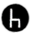
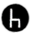

Monazit und Bastnäsit: Das Erz Bastnäsit bezeichnet eine Serie von Seltenerdfluorcarbonaten. Es ist neben Monazit das wichtigste Erz zur Gewinnung der Metalle der Seltenen Erden.
Taubgestein: auch Masse, Berge (insbesondere im Steinkohlebergbau), Abraum, Zwischenmittel (im Tagebau), Scheidewerk oder Nebengestein (im Erzbergbau) genannt, bezeichnet in der Bergmannssprache nicht verwertbares Gestein.

Veredelung: Prozesse, die darauf abzielen, Minerale vom Erz zu trennen und Unreinheiten zu eliminieren oder Minerale für die weitere Verarbeitung vorzubereiten.